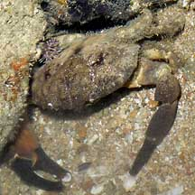
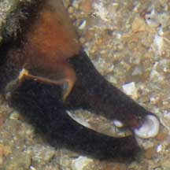
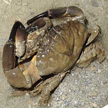
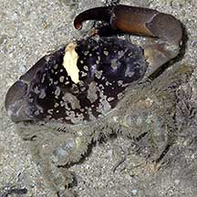
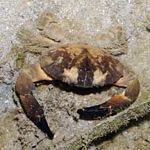

|
|
| crabs text index | photo index |
| Phylum Arthropoda > Subphylum Crustacea > Class Malacostraca > Order Decapoda > Brachyurans > Family Xanthidae |
| Smooth
spooner crab Etisus laevimanus Family Xanthidae updated Dec 2019 Where seen? This large crab with typical spoon-tipped pincers is commonly seen on our Southern shores among coral rubble and near living reefs. 'Laevi' in Latin means 'left', while 'manus' means hand. Indeed, the left pincer is usually larger than the right. Features: Body width 8-10cm. Body fan-shaped, rather flat, with 4 blunt teeth on the edges of the shell. Colours and patterns in a wide variety; basically brown, beige or grey. Plain or with patterns which include pale or yellow mottles, with one or more white or yellow stripes from the front between the eyes to about half way down the body. The walking legs are fringed with long hairs and end in pointed tips. Pincers long, slender and smooth (no pimples) with black spoon-shaped tips. The left pincer usually slightly larger and longer. These are probably used to scrape off algae. Sometimes confused with Rock crabs (Leptodius sp.) which have pincers which are more squat, with bumps on the elbows. |
 Pincers long, smooth (not bumpy). Pulau Sekudu, Jun 05 |
 Tips of the pincers are spoon-shaped. |
|
 A mating pair. Pulau Hantu, Jun 10 |
 Sisters Island, Dec 05 |
 Pulau Semakau, Apr 08 |
Crab eating, Terumbu Pempang Laut, May 2019 |
| Smooth spooner crabs on Singapore shores |
On wildsingapore
flickr
|
| Other sightings on Singapore shores |
| Acknowledgements With grateful thanks to Ondrej Radosta for identifying the species of the crabs on this page. Links
|